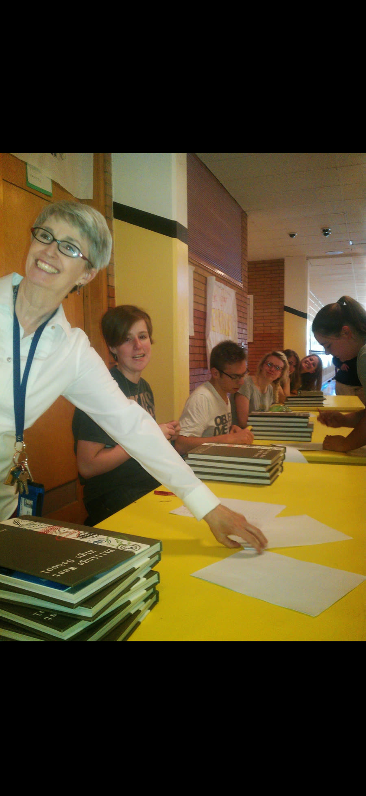
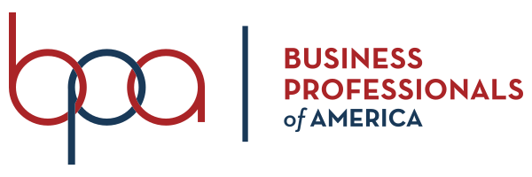
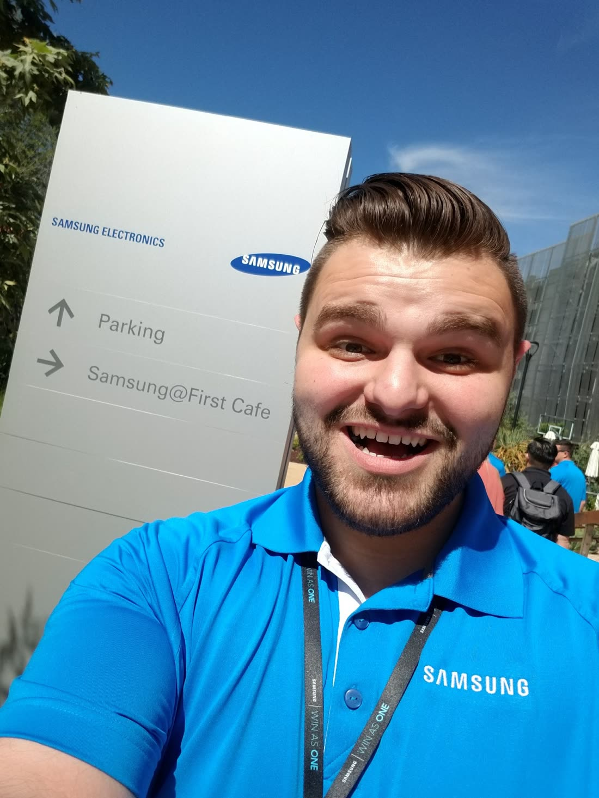
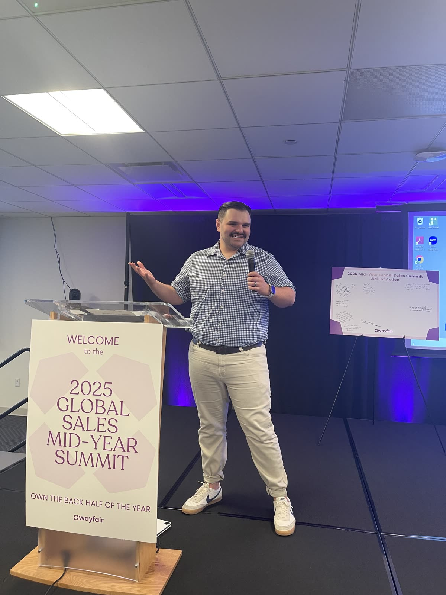
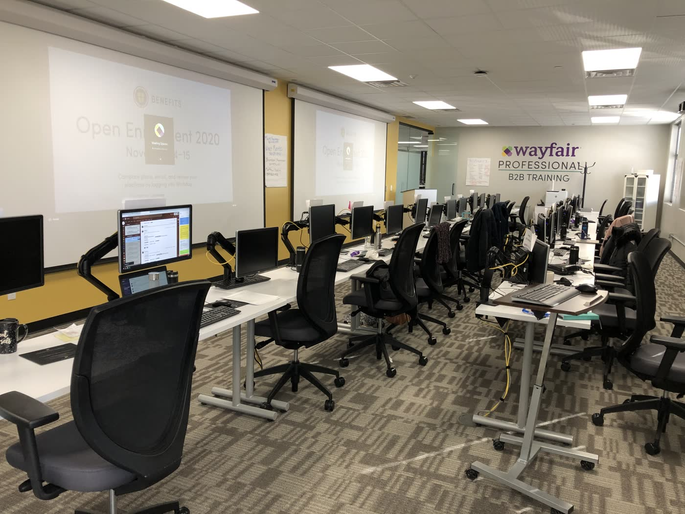

Yearbook editor
First love of design: layout, photography, and telling a story in print.
Strong teachers and mentors made room for craft early. Yearbook was where design stopped being optional and started feeling like identity.

About
I make learning people can use: courses, training videos, and live facilitation. Here’s the path that shaped that work.
Where I am now
As B2B Sales Enablement Lead at Wayfair Professional (2020–present), I work across Communications & Engagement and Sales Enablement, turning operational complexity into e-learning, training videos, job aids, and recurring internal communications for remote and hybrid sales teams.
I’m also pursuing an MBA at Weber State University while sharpening the craft that got me here: instructional design, multimedia production, and facilitation people can act on.
Selective beats: what each era gave the work, not a full résumé.
First love of design: layout, photography, and telling a story in print.
Strong teachers and mentors made room for craft early. Yearbook was where design stopped being optional and started feeling like identity.


Competition, travel, and early networking beyond the classroom.
BPA stretched presentation skills and professional confidence, useful later when facilitation and stakeholder work became central.
Remote social media marketing: messaging, design, and industry connections.
An early look at how brand, messaging, and visual craft work together in a large organization.
From helping customers learn new devices to enabling partners in the field.
Started in customer education (including older customers adopting new devices), then moved into field sales enablement at partner locations such as T-Mobile, Verizon, and Best Buy. As Field Sales Manager (2013–2018), supported training for a salesforce of about 150 mobile representatives and facilitated sessions with third-party vendors. That’s where facilitation roots took hold.

Cold outreach and enrollment, then frontline facilitation, then instructional design and content.
As B2B Frontline Trainer (2018–2020), developed new-hire curricula and facilitated a four-week onboarding program. The through-line stayed B2B: enroll customers, facilitate in person and virtually, then design courses, training videos, communications, and employee-engagement content. Selected examples live on the Work page.


Adult continued education: deepening leadership and business context for learning work.
Learning doesn’t end when someone can close the window. The MBA pairs with ongoing craft in instructional design and multimedia production.
Bachelor’s in Business Management, University of Phoenix
MBA in progress at Weber State University
English and Spanish
Design and production identity from yearbook through marketing and multimedia, used in service of clear learning, not as a laundry list.